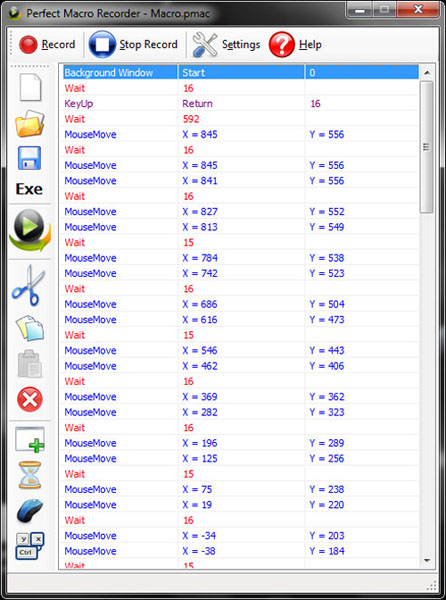

Perfect Macro Recorder
Perfect Macro Recorder
is a keyboard and mouse macro recorder that can help you accomplish your work quickly through automating daily tasks by recording them. By "recording" we mean recording your mouse actions(movements & clicks) and keyboard actions then generating a macro script in which you can use to playback all your recorded actions.

Key benefits:
Keyboard and Mouse Macro Recorder
Perfect Macro Recorder is a keyboard & mouse macro recorder, saves mouse and keyboard actions so you can play them later with different speeds(slow,high,normal).
Replay using a global hot key
You can replay macros using global hot
keys. A global hot key is a key combination such as "Ctrl+Alt+S".
Macro Script
You can modify and edit the macro script to fit your task.
Auto mouse clicker
Record mouse clicks and playback later.
Smart Playback
A feature enables you to playback the macro as it has been recorded.
Replay using a global hot key
You can replay macros using global hot
keys. A global hot key is a key combination such as "Ctrl+Alt+S".
Give a long vacation to your hands and
wrists
Perfect Macro Recorder can also help to reduce the pain
on your hands and wrists.
Automate your everyday tasks without any
programming knowledge
The main advantage of using a
macro recorder is to allows a user to easily perform complex
operations over and over that may not be feasible without custom computer
programming / scripting.
Maintenance of
your computer
Maintenance your computer or network
With Perfect Macro Recorder.
Create a stand a lone macro
Convert your macro to an executable file which runs stand
a lone on any
computer.
Testing
Record test scenarios and save them to individual .EXEs to be
run later.
See Full features list here.
System
Requirements
Intel Pentium, Celeron, AMD or compatible
processor Windows NT4/2000/XP/2003/Vista/Windows 7 and .NET Framework 3.50
 Improving quality
Improving quality